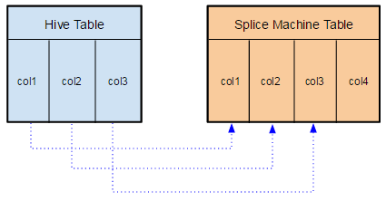
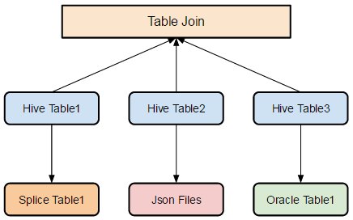

Using Splice Machine with HCatalog
Apache HCatalog is a metadata and table management system for the broader Hadoop platform. HCatalogs table abstraction presents users with a relational view of data in the Hadoop distributed file system (HDFS) and ensures that users need not worry about where or in what format their data is stored. HCatalog supports reading and writing files in any format for which a SerDe (serializer-deserializer) can be written.
Splice Machine integrates with HCatalog, allowing any HiveQL statements
to read from (e.g. SELECT) and write to (e.g. INSERT) Splice Machine
tables. You can also use joins and unions to combine native Hive tables
with Splice Machine tables.
You can find extensive information about HCatalog on the Apache Hive web site.
Also note that you can also take advantage of our HCatalog integration to access your Splice Machine tables for reading and writing from any database that features HCatalog integration, such as MongoDB.
Using HCatalog with a Splice Machine Table
To use HCatalog with Splice Machine, you connect a Hive table with a
Splice Machine table using the HiveQL CREATE EXTERNAL TABLE statement.
In Hive, an external table can point to any HDFS location for its
storage; in this case, the table is located in your Splice Machine
database.
For example, here’s a HiveQL statement that creates a table named
extTest1 that is connected with the hcattest table in a Splice
Machine database:
hive> CREATE EXTERNAL TABLE extTest1(col1 int, col2 varchar(20))
STORED BY 'com.splicemachine.mrio.api.hive.SMStorageHandler'
TBLPROPERTIES ("splice.jdbc"="jdbc:splice://localhost:1527/splicedb\;user=splice\;password=admin", "splice.tableName"="TEST.hcattest");
Your table definition must include:
- The
STORED BYclause as shown, which allows the table to connect with Splice Machine. - The
TBLPROPERTIESclause, which specifies:-
The JDBC connection you are using. include your access user ID and password.
If you are running Splice Machine on a cluster, connect from a machine that is NOT running an HBase RegionServer and specify the IP address of a regionServer node, e.g. 10.1.1.110.
Use
localhostif you’re running the standalone version of Splice Machine. -
The name of the table in your Splice Machine database with which you are connecting the Hive table.
-
How Splice Machine Maps Columns
If your Hive table contains a different number of columns than does your Splice Machine database table, Splice Machine maps the columns.
For example, if your Hive table has three columns defined, and your Splice Machine table has four columns defined, then Splice Machine maps the three Hive columns into the first three columns in the Splice Machine table, as shown here:

Using HiveQL to Join Tables From Different Data Resources
You can use HiveQL to join tables that point to different data resources. The Java class provided by Splice Machine allows you to include tables from your Splice Machine database in such joins, as illustrated here:

For more information about Hive joins, see the Apache Hive documentation.
Examples
This section contains several simple examples of using HCatalog.
Example 1: Simple Example
This is a simple example of creating an external table in Hive that maps directly to a Splice Machine table.
-
Create the Splice Machine table
This example uses a very simple Splice Machine database table,
hcattest, which we create with these statements:splice> create table hcattest(col1 int, col2 varchar(20)); splice> insert into hcattest values(1, 'row1'); splice> insert into hcattest values(2, 'row2'); splice> insert into hcattest values(3, 'row3'); splice> insert into hcattest values(4, 'row4'); -
Verify the table
Verify that
hcattestis set up correctly:splice> describe hcattest; COLUMN_NAME | TYPE_NAME | DES&|NUM&|COLUMN&|COLUMN_DEF|CHAR_OCTE&|IS_NULL& -------------------------------------------------------------------------- COL1 |INTEGER |0 |10 |10 |NULL |NULL |YES COL2 |VARCHAR |NULL |NULL|20 |NULL |40 |YES 2 rows selected splice> select * from hcattest; COL1 |COL2 ------------------------------- 1 row1 2 row2 3 row3 4 row4 4 rows selected -
Create an external table in Hive
You need to create an external table in Hive, and connect that table with the Splice Machine table you just created. Type the following command into the Hive shell, substituting your user ID and password.
hive> CREATE EXTERNAL TABLE extTest1(col1 int, col2 varchar(20)) STORED BY 'com.splicemachine.mrio.api.hive.SMStorageHandler' TBLPROPERTIES ("splice.jdbc"="jdbc:splice://localhost:1527/splicedb\;user=splice\;password=admin", "splice.tableName"="SPLICE.hcattest"); -
Use HiveQL to select data in the Splice Machine table
Once you’ve created your external table, you can use
SELECTstatements in the Hive shell to retrieve data from Splice Machine table. For example:hive> select * from extTest1; OK 1row 1 2row 2 3row 3 4row 4If the external table that you created does not have the same number of columns as are in your Splice Machine table, then the Hive table’s columns are mapped to columns in the Splice Machine table, as described in How Splice Machine Maps Columns, above.
Example 2: Table with Primary Key
This example uses a Splice Machine table, tblA, that has only string
types and a primary key.
-
Create and verify the Splice Machine table
This example uses a simple Splice Machine database table that we’ve created,
tblA, which we verify:splice> describe tblA; COLUMN_NAME | TYPE_NAME | DES&|NUM&|COLUMN&|COLUMN_DEF|CHAR_OCTE&|IS_NULL& -------------------------------------------------------------------------- COL1 |CHAR |NULL |NULL|20 |NULL |40 |YES COL2 |VARCHAR |NULL |NULL|56 |NULL |112 |YES 2 rows selected splice> select * from tblA; COL1 |COL2 ------------------------------- char varchar 2 char 1 varchar 1 2 rows selected -
Create an external table in Hive
You need to create an external table in Hive, and connect that table with the Splice Machine table you just created. Type the following command into the Hive shell, substituting your user ID and password.
hive> CREATE EXTERNAL TABLE extTest2(col1 String, col2 varchar(56)) STORED BY 'com.splicemachine.mrio.api.hive.SMStorageHandler' TBLPROPERTIES ("splice.jdbc"="jdbc:splice://localhost:1527/splicedb\;user=splice\;password=admin", "splice.tableName"="SPLICE.tblA"); -
Use HiveQL to select data in the Splice Machine table
Once you’ve created your external table, you can use
SELECTstatements in the Hive shell to retrieve data from Splice Machine table. For example:hive> select * from extTest2; OK char varchar 2 char 1varchar 1
Example 3: Table with No Primary Key
This example uses a Splice Machine table, tblB, that has a primary key
and uses integer columns.
-
Create and verify the Splice Machine table
This example uses a simple Splice Machine database table that we’ve created,
tblA, which we verify:splice> describe tblA; COLUMN_NAME | TYPE_NAME | DES&|NUM&|COLUMN&|COLUMN_DEF|CHAR_OCTE&|IS_NULL& -------------------------------------------------------------------------- COL1 |INTEGER |0 |10 |10 |NULL |NULL |NO COL2 |INTEGER |0 |10 |10 |NULL |NULL |YES COL3 |INTEGER |0 |10 |10 |NULL |NULL |NO 3 rows selected splice> select * from tblB; COL1 |COL2 |COL3 ------------------------------- 1 |1 |1 2 |2 |2 2 rows selected -
Create an external table in Hive
You need to create an external table in Hive, and connect that table with the Splice Machine table you just created. Type the following command into the Hive shell, substituting your user ID and password.
hive> CREATE EXTERNAL TABLE extTest3(col1 String, col2 varchar(56)) STORED BY 'com.splicemachine.mrio.api.hive.SMStorageHandler' TBLPROPERTIES ("splice.jdbc"="jdbc:splice://localhost:1527/splicedb\;user=splice\;password=admin", "splice.tableName"="SPLICE.tblB"); -
Select data from the Splice Machine input table
Once you’ve created your external table, you can use
SELECTstatements in the Hive shell to retrieve data from Splice Machine input table. table. For example:hive> select * from extTest3; OK 111 122